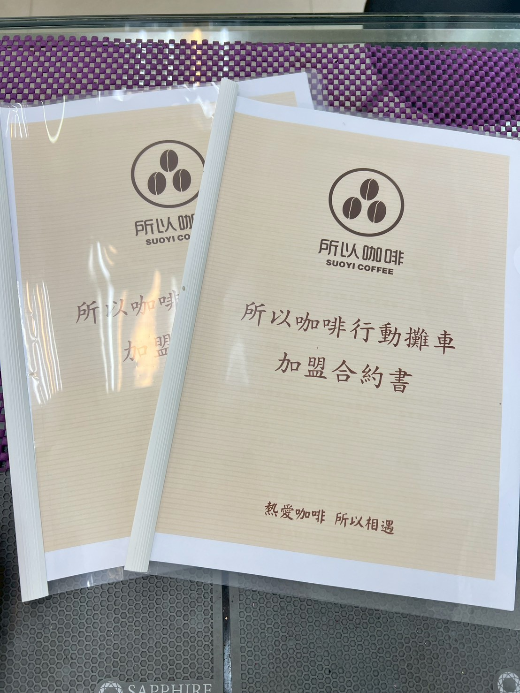
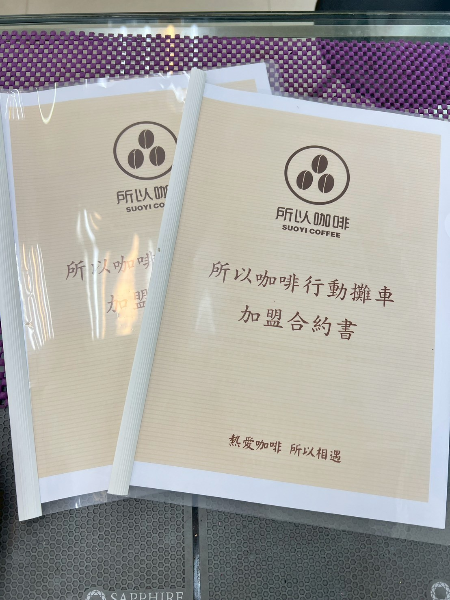

加盟方案總覽（餐車 / 小店）
加盟流程（申請 → 培訓 → 開店）
費用與回收模型
眼見為憑的加盟優勢
我們不畫大餅，只給您看真實的營運成績。
強勢開幕支援
從紅布條、氣球佈置到「買一送一」行銷活動，總部全程策劃。看這滿滿的開幕氣勢，就是您未來的日常。
紮實教育訓練
零經驗也不怕！我們有最熱情的團隊手把手教學。從萃取理論到實務操作，讓您自信地端出每一杯好咖啡。

多元獲利結構
不只賣飲品！品牌保溫瓶、掛耳包等高質感周邊，提升客單價與品牌黏著度，創造額外營收。
加盟亮點 & 投資參考
快速掌握關鍵資訊，讓您更有把握談判與規劃。
關鍵亮點
- 標準化設備清單，減少備貨煩惱
- 完整 SOP 與教育訓練支援
- 多元獲利：飲品＋周邊＋外送
- 開幕與行銷方案由總部協助執行
投資參考（示意）
以下為常見投入構成範例，實際金額會依商圈、裝修與設備選項而異，請以加盟簡章或諮詢所得報價為準。
- 餐車方案： 設備、車體、初期備料與行銷（參考範圍請洽總部）
- 小店方案： 裝修、設備、備料與人力訓練（依坪數與定位估價）
- 可協助： 商圈評估、成本試算、裝修/廠商名單
兩種模式，一樣專業
依據您的預算與商圈屬性，選擇最適合的戰場。

方案 A：風格餐車型
Mobile Model
「城市裡的移動風景，您的咖啡夢隨處可棲。」
適合初次創業、小資族或喜歡跑市集的您。
- 高機動性，隨人潮移動
- 租金壓力極低
- 3D 模組化設計，快速打造
方案 B：社區店面型
Store Model
「打造鄰里的客廳，用咖啡香氣溫暖社區。」
適合想在地深耕、追求穩定客源與提供內用空間的您。
- 完整空間體驗，客單價較高
- 結合外送平台，雙線營收
- 實體招牌與價目表，吸睛度高
 

白紙黑字的承諾，
是我們對夥伴的責任。
創業不是兒戲，我們深知每一分資金都來之不易。因此，「所以咖啡」堅持公開透明的加盟合約。
-
權益保障
條款清晰，無隱藏費用，保障雙方權益。 -
永續經營
我們不炒短線，而是尋找願意一起長跑的夥伴。 -
完整 SOP
從技術轉移到營運手冊，我們毫無保留地傳承。
夥伴的聲音
真實夥伴的回饋，幫助您更安心做選擇。
“總部的教育訓練非常實務，從機器操作到顧客服務都有模組化教案；開幕期間總部也協助行銷，讓我們迅速打開市場。”
— 王小姐，餐車方案夥伴

“我們重視長期合作，並提供持續的選品與活動支援，讓加盟主能專注於服務與經營。”
— 所以咖啡 顧問團隊
加盟流程 SOP
簡單 7 步驟，開啟您的咖啡事業
諮詢洽談
了解雙方需求與理念
商圈評估
人流分析，保障獲利
簽訂合約
權益保障，正式合作
教育訓練
技術轉移，實店實習
店面裝修
車體打造或店面施工
駐點輔導
開幕支援，調整營運
正式營運
夢想啟航，永續經營